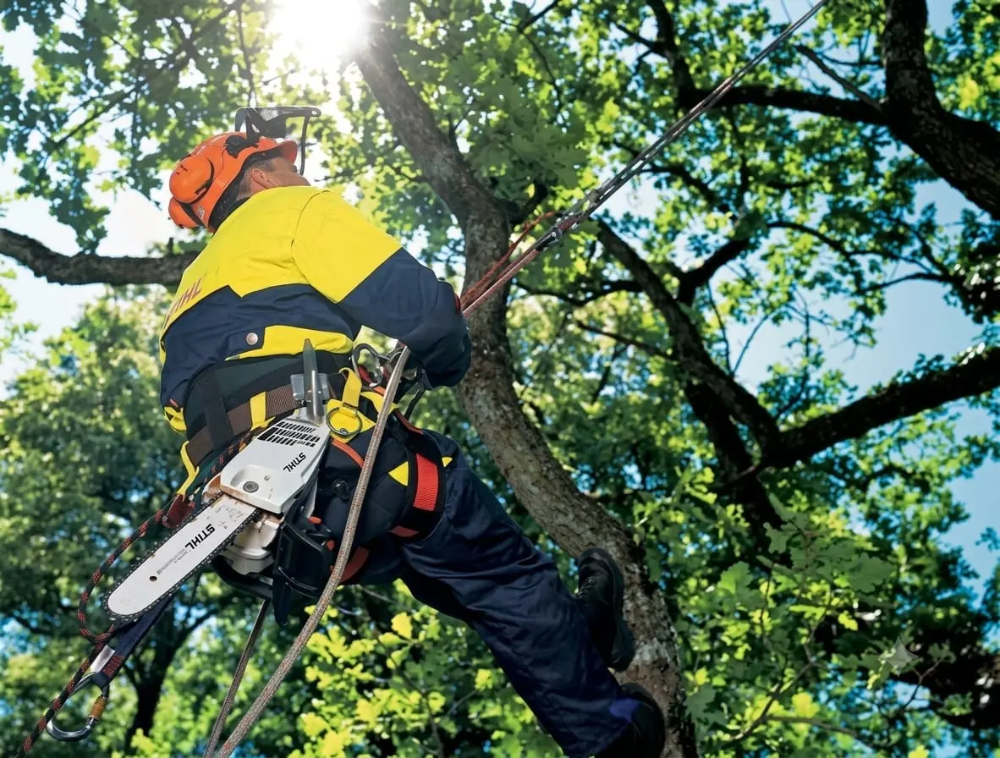
Poda de árvores
Manejo e manutenção de árvores com profissionais especializados.
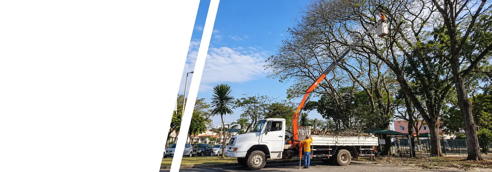
Poda, corte, roçada e manejo de vegetação com equipe especializada, segurança e gestão profissional.
Solicite um orçamento pelo WhatsApp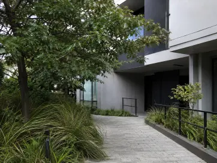
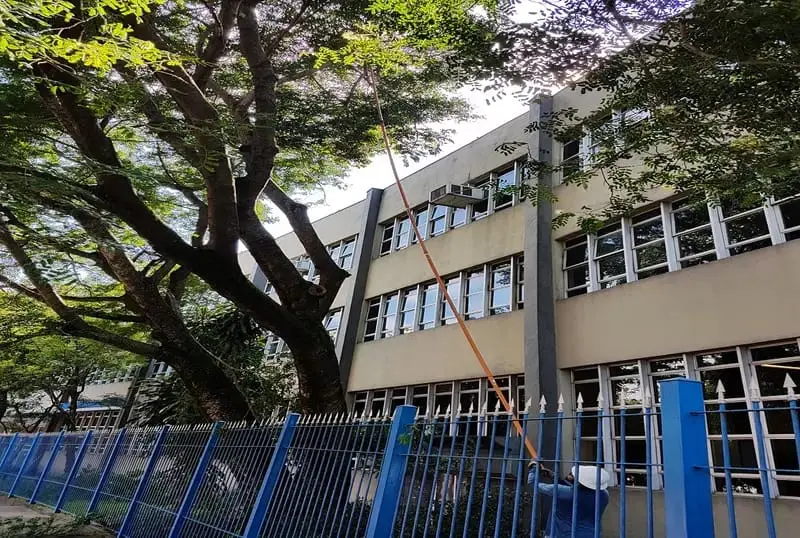
Árvores que precisam de poda, vegetação descontrolada e áreas sem manutenção podem trazer riscos de acidentes, problemas de segurança e novas preocupações para quem administra o condomínio.
Quero resolver isso!
Manejo e manutenção de árvores com profissionais especializados.
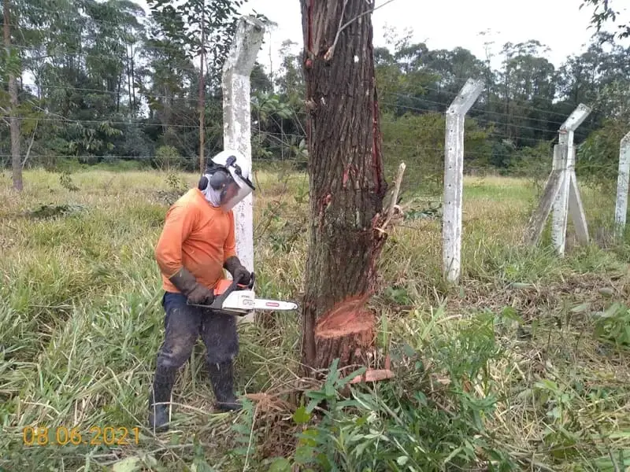
Execução estruturada para demandas de corte e supressão.
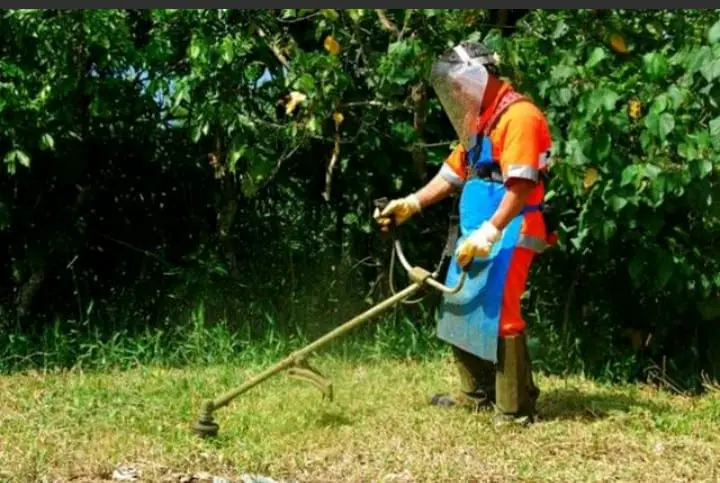
Limpeza e controle da vegetação em diferentes tipos de áreas.
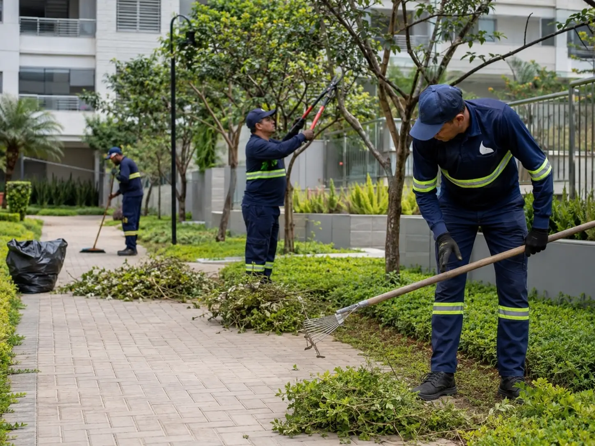
Manutenção para manter a vegetação controlada e a área operacionalmente adequada.
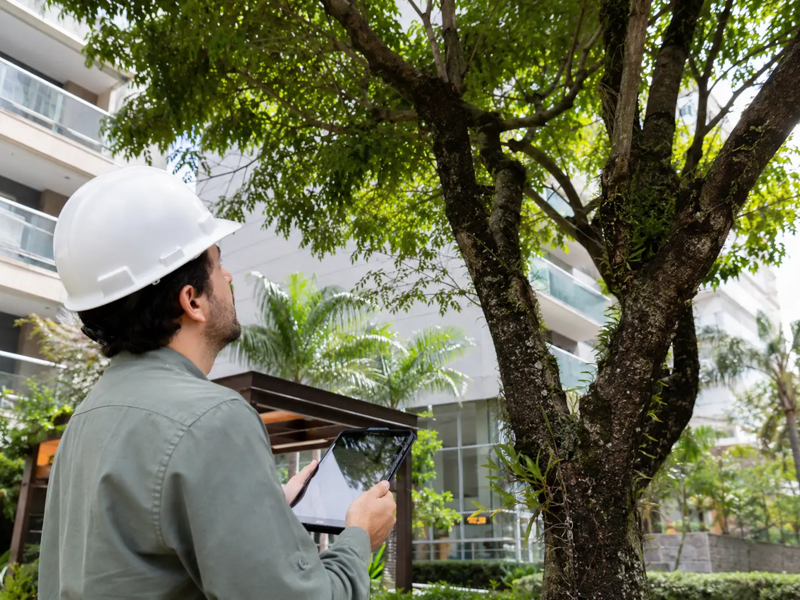
Suporte técnico relacionado à avaliação e autorização de corte.
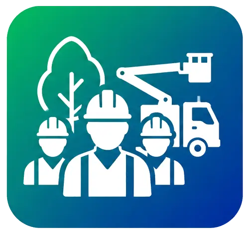
Estrutura para execução das demandas de manutenção e manejo.
Operação estruturada com preocupação com segurança e SSMA.
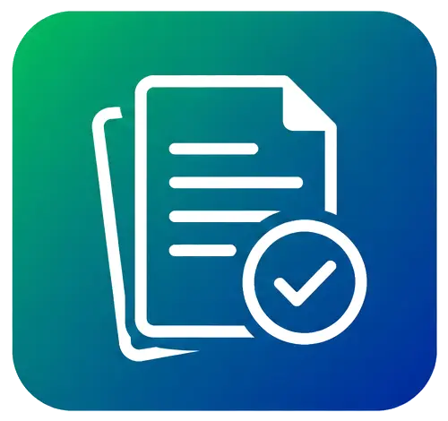
Gestão e acompanhamento da documentação necessária à operação.
Monitoramento em tempo real, relatórios fotográficos, planejamento e controle de produtividade.
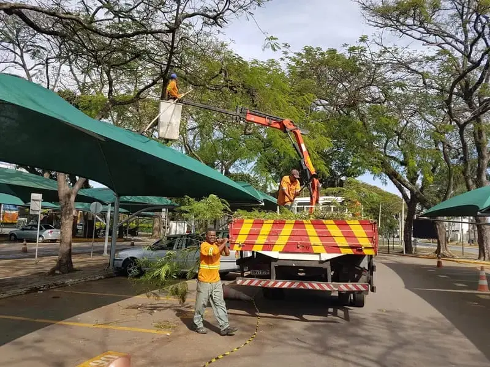
A PC Matos possui experiência em operações que exigem equipes, equipamentos, planejamento, segurança, documentação e controle operacional.
Converse com a PC Matos!Fale com a PC Matos e encontre a solução ideal para poda, roçada e manejo da vegetação do seu condomínio.
Solicitar orçamento pelo WhatsApp